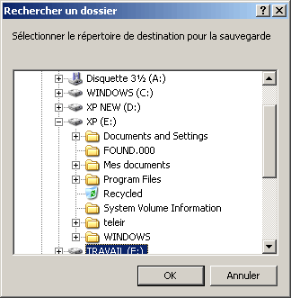

Lors du scan de la partition, les fichiers et répertoire
trouvés sont ajoutés dans les zones d'arborescence et de
fichiers.
On peut effectuer une sauvegarde totale ou partielle des fichiers
retrouvés. Si l'on veut faire une restauration partielle, il
faut au préalable sélectionner les fichiers à
restaurer.
La colonne FileID indique le premier cluster du fichier pour les cas des partitions FAT16/32, et le numéro d'entrée dans la MFT pour les partitions NTFS.
La restauration des partitions NTFS est en cours
de test.
Un répertoire peut avoir 3 états différents selon l'état des fichiers et des répertoires qu'il contient :
Le répertoire n'est pas sélectionné et aucun fichier/répertoire n'est sélectionné dans les sous répertoires.
Des fichiers et/ou sous-répertoire
sont sélectionnés et certains sont
dé sélectionnés.
Tous les fichiers et sous répertoires sont sélectionnés.
On peut changer l'état d'un répertoire et de tous les
des fichiers et cliquer sur la case gauche du nom, on peut aussi
sélectionner des
fichiers directement dans la zone des fichiers.
Une sélection multi-critères (par nom du fichier,
taille,...) est prévue.
Pour sélectionner (dé sélectionner) une arborescence complète, il faut cliquer sur la coche (blanche).
Sélectionnez ou selon que vous voulez faire une restauration partielle ou complète. Une boîte de dialogue va s'afficher pour vous demander le répertoire dans lequel restaurer ces fichiers.

La restauration des fichiers doit s'effectuer sur une partition
saine
et en aucun cas sur la partition actuellement
sélectionnée. Lors de la restauration, Check Partition va
recréer l'arborescence de la partition analysée.
Note: Le fait que les fichiers soient dans
l'arborescence ne
garantit pas qu'ils puissent être intégralement
restaurés. Les raisons sont multiples:
secteurs défectueux, partition trop endommagé, etc. La
vérification est effectuée lors de la restauration pour
ne pas ralentir l'analyse.
Il est possible de sauvegarder dans un fichier texte la liste des
fichiers retrouvés ou de restreindre aux fichiers
sélectionnées via le menu et .
On peut utiliser le menu pour ouvrir complètement l'arborescence des répertoires et pour la refermer.